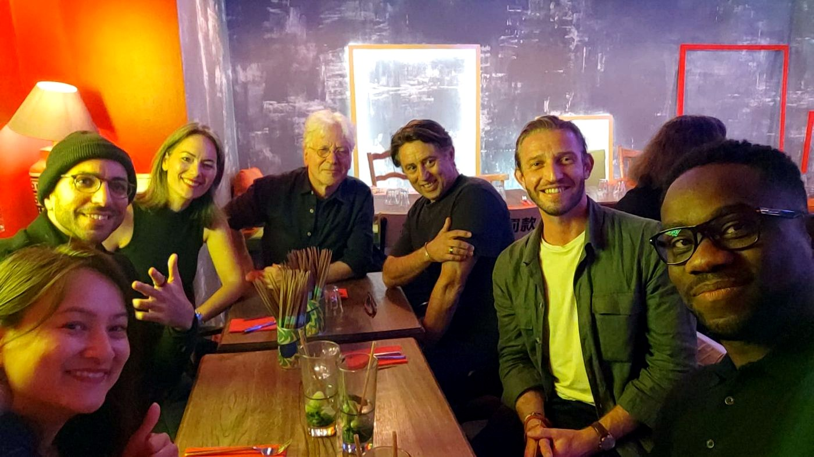
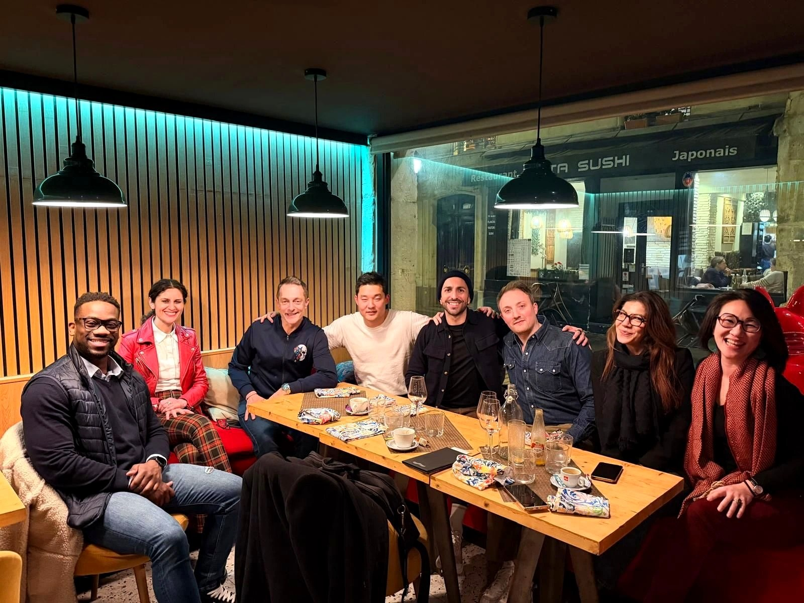
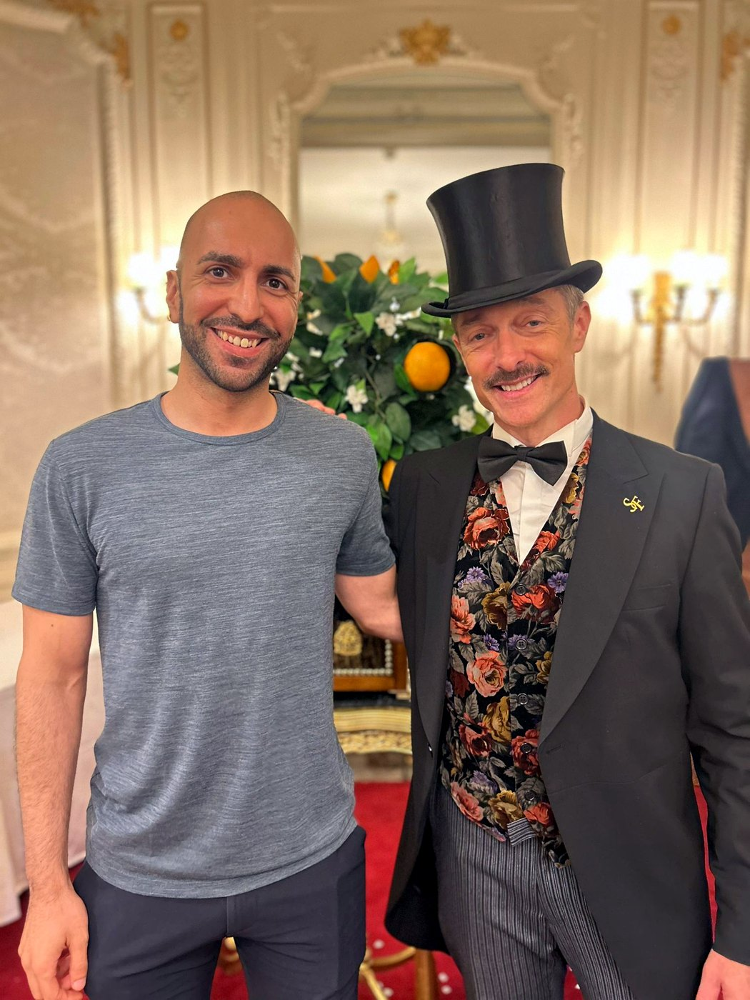
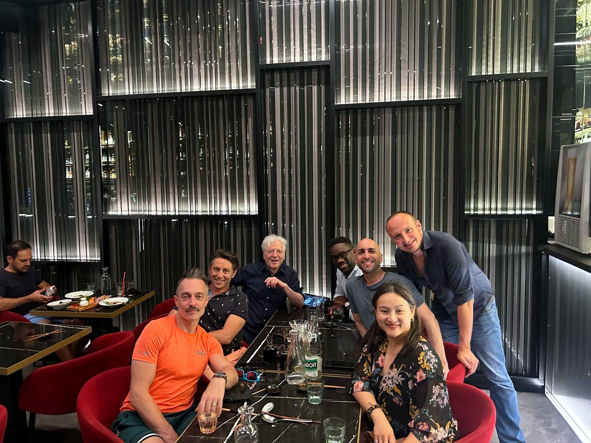
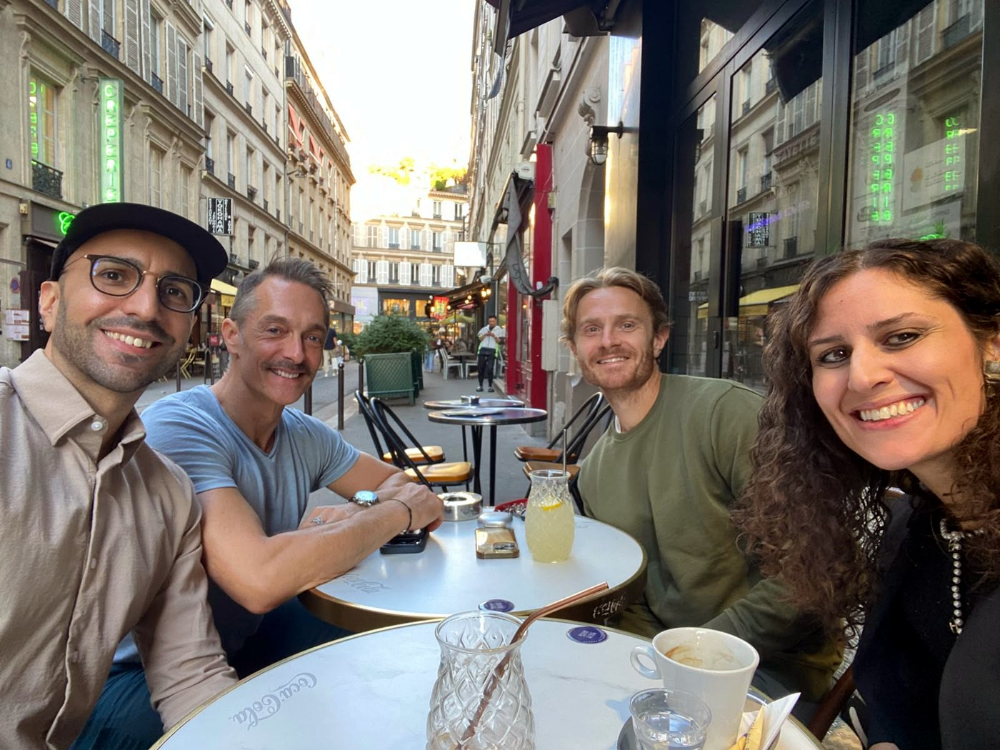
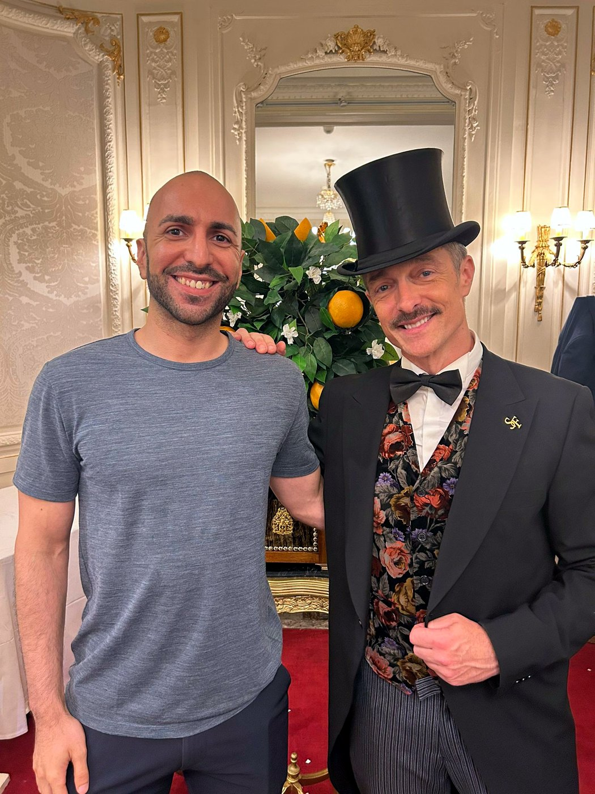
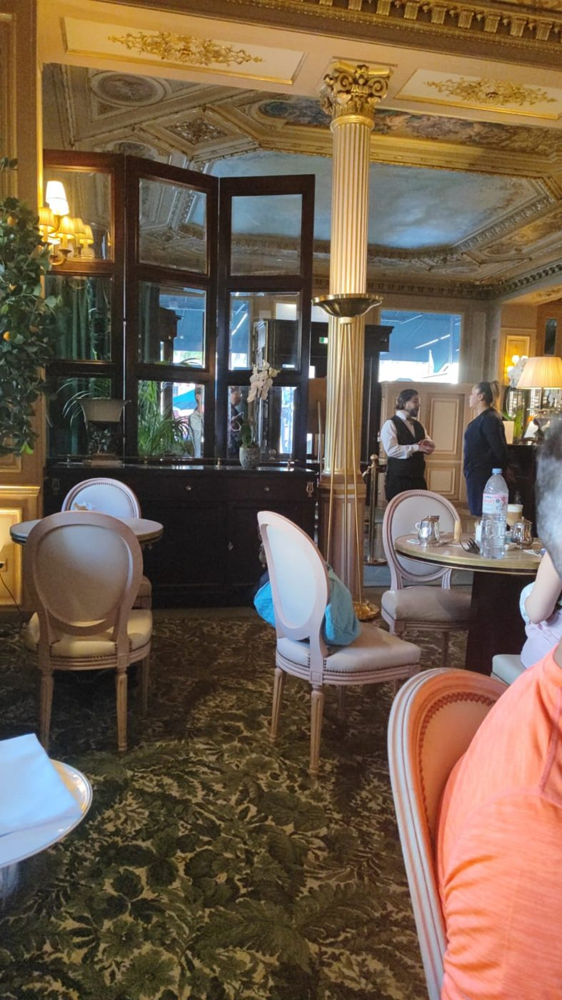
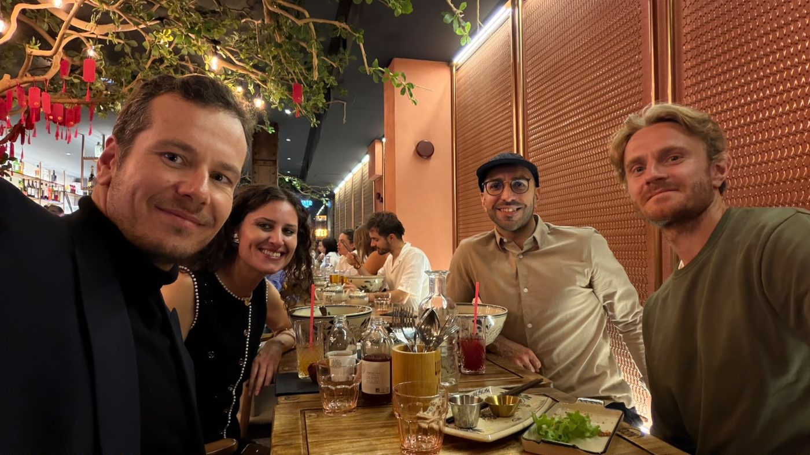
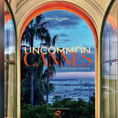

Cercle privé · Paris · sur invitation
Entreprendre seul, jamais isolé.
L'Aftermind réunit une quarantaine d'entrepreneurs et de créateurs. Un dîner chaque mois, de l'entraide toute l'année, des relations qui comptent. Sans pitch.
La chance, ça se construit. La tienne : quarante personnes qui veulent te voir réussir.


40membres
16dîners depuis juillet 2025
22autour de la table, le 24 juin 2026
0PowerPoint sorti à table
L'histoire
Un test d'un mois, devenu un cercle.
Les soirées
Ce que ça donne, un jeudi soir.







Nos tables, depuis juillet 2025
- Café de la Paixjuil. 2025
- Shinko Opérasept. 2025
- Pink Koïoct. 2025
- Naï Naïdéc. 2025
- Chimèredéc. 2025
- Tiger Milkjanv. 2026
- Guirenjanv. 2026
- Le 404févr. 2026
- Papa Poulefévr. 2026
- Nigiri Barmai 2026
- Shinko Opérajuin 2026
Les formats
Trois façons de se retrouver.
Le dîner du deuxième jeudi
Un dîner par mois, le deuxième jeudi, à 19 h 30. La date est donnée à l'avance, sans sondage : les premiers qui répondent ont leur place.
- 6 à 8 personnes par table
- Des tables composées pour que les bonnes personnes se rencontrent
- Chacun règle son repas
Les formats portés par les membres
Un membre a une idée, il la porte. Le cercle relaie.
- Le coworking, chez un membre qui ouvre son bureau
- Le sport, une sortie, un verre après le travail
- Tout format proposé par un membre est le bienvenu
L'entraide
Une décision à prendre, un blocage, une mise en relation ? Tu poses ta demande dans le groupe. Chacun répond s'il le souhaite.
Appel Aftermind Je cherche : … Pour : … Délai : …
- 10déc. 2026Le retour
- 14janv. 2027
- 11févr. 2027
- 11mars 2027
Les lives du premier mercredi sont en pause. Ils reprendront dès que trois membres le demanderont.
La boîte à outils du membre
Trois gestes pour faire vivre le cercle.
Demander de l'aide
Copie, complète, colle dans le groupe.
Appel Aftermind Je cherche : … Pour : … Délai : …
Proposer un format
Un coworking, un sport, une sortie : tu le portes, le cercle relaie.
Idée Aftermind Quoi : … Quand : … Où : … Places : …
Ne rater aucun dîner
Le deuxième jeudi de chaque mois, à 19 h 30, ajouté d'un clic à ton agenda.
Ajouter à mon agendaTu veux présenter quelqu'un ? Écris à Onur, il décide de l'invitation.
Dans le groupe, le lendemain
« Jeudi soir a été bien plus qu'une simple soirée. Une parenthèse hors du temps, riche en échanges, en rencontres et en inspirations. »
« En 6 mois, un véritable cercle de partage et de progrès entre pairs. »
« Une soirée où l'on a pris beaucoup de hauteur. »
« De l'authentique, du brut, du bon. On a ri, on a parlé vrai. »
« Dynamique, ambitieux, concret, humain. »
« Comme d'habitude, l'humain au cœur de ces échanges. »
« Il y a de la magie à se retrouver. On s'apprend. »
« Merci pour la mise en relation. Ça fait du bien. »
« Le pouvoir des pairs qui grandissent ensemble. »
« C'était exceptionnel. Quel kiff ! »
« Des moments de convivialité qui nourrissent autant le corps que l'esprit. »
« Merci d'être venus comme vous êtes. Une soirée magique. »
« Une magnifique soirée, un beau moment de rencontre. »
« C'est vraiment une joie d'avoir la possibilité de vous côtoyer. »
« Un échange et un compte rendu de très grande qualité. »
« C'était un super moment. »
« Ravie d'avoir enfin pu rencontrer certains membres. »
« Fière de rejoindre cette belle initiative. Hâte d'imaginer les passerelles entre nous. »
« C'était très chouette, merci ! »
« Merci pour cette soirée, et à tous ceux qui étaient présents. »
Les membres
Une quarantaine de parcours qui ne se ressemblent pas.
Des fondateurs, des auteurs, des coachs, des artistes. Ce qui les réunit : l'envie de construire, et de ne pas le faire seul. Clique sur une fiche pour retrouver chacun sur LinkedIn.
- Illusionniste
- Business angel
- Éditrice
- Thérapeute de couple
- Chroniqueur radio
- Podcasteur sportif
- Coach vocal
- CTO indépendant
- Experte du repas d'affaires
- Photographe 3D
- Profiler comportementale
- Prof de yoga
- Ex-athlète d'arts martiaux
- Ancien rugbyman
- Directeur de création
- Experte en finance
- Conférencier philosophe
- Coach carrière
- Créateur de jeux urbains
- Stratège de marque
- Experte en pédagogie
- Expert en prospection
- Thérapeute manuel
- Coach en neurosciences
- Directeur de production
- Experte de la retraite des dirigeants
Les règles
Quatre règles, et un espace qui se protège.
Confidentialité absolue
Ce qui se dit ici reste ici.
Pas de pitch
Aucune démarche commerciale. Les relations business naissent d'elles-mêmes, quand c'est pertinent.
Le respect du temps et de la parole
On écoute autant qu'on parle.
L'entraide est volontaire
Personne n'est obligé d'aider ni de répondre.
La bibliothèque
Les livres du cercle.
16 livres écrits ou portés par des membres, rangés par thème. Et d'autres en route.
Réseau et collectif

Je réussis grâce à mon réseau
Une seule rencontre peut changer une vie d'entrepreneur.
Dunod, 2026

Apprendre les uns des autres
Faire du savoir de chacun une force collective.
Eyrolles, 2025

Vivre à deux c'est simple, il suffit d'apprendre
Mieux vivre la relation de couple.
2026
Parole, récit et influence

La voix, cet outil du pouvoir
Trouver sa voix pour être entendu.
JC Lattès, 2020

Le Leadership Narratif
Fédérer ses équipes par le récit.
Prochain Chapitre, 2026

Détecter les intentions
Le manuel d'une ancienne profileuse pour lire au-delà des mots.
Autoédition, 2026

Parler de ses qualités sans se vanter
Réussir ses entretiens en restant vrai.
Autoédition, 2026

Écrire un livre pour booster votre business
La ghostwriter des entrepreneurs livre sa méthode.
2024
Entreprendre et investir

La magie derrière l'expérience client
L'illusionnisme au service de l'effet waouh.
Dunod, 2026

Construis ta liberté financière
Sept étapes vers une vie sereine et choisie.
Eyrolles, 2025

Investir dans les parkings pour créer sa liberté financière
Un investissement simple et accessible.
Eyrolles, 2022
Vivre mieux, regarder autrement

Petites habitudes, grandes réussites
51 pratiques pour devenir la meilleure version de soi.
Eyrolles, 2019

Insupportable winneuse
Le vide qui suit la réussite.
Bayard, 2025

Minikif
37 petits bonheurs pour réveiller sa joie.
BoD, 2025

L'art de la guerre du rugby
Sun Tzu sur le terrain, à l'école et dans la vie.
Le Voyageur, 2026

Uncommon Cannes
Un Cannes intime et méconnu, en images.
A Day A Dream, 2025
À paraître
- Léa Ben Zimra · le repas d'affaires comme levier commercial
- Corinne Huynh · l'identité professionnelle et les grandes transitions
Le mot de l'hôte
« J'ai lancé l'Aftermind en juin 2025 avec un message à dix personnes. Je construisais seul, et il me manquait une table où l'on parle vrai.
Mon rôle est simple : donner une date, composer les tables, tenir le cadre. Le tien l'est aussi : venir, et oser demander. »
Onur Karapinar · fondateur et hôte
La chance, ça se construit.
Ici, elle a un prénom, et une place à table.
Rejoindre
L'entrée se fait sur invitation.
Aftermind reste petit pour rester vrai. Il n'y a ni formulaire, ni liste d'attente, ni abonnement.
Un membre peut proposer quelqu'un. Onur prend la décision, pour préserver la qualité du cercle.
Questions fréquentes
Combien ça coûte ?
Rien. Le cercle est gratuit. Lors d'un dîner, chacun règle son repas.
Dois-je venir à tous les dîners ?
Non. Tu viens quand c'est juste pour toi.
Puis-je vendre mes services dans le cercle ?
Aftermind n'est pas un espace de prospection. Des relations business peuvent naître, quand c'est pertinent.
Je ne peux pas venir à un dîner où je suis inscrit.
Préviens simplement, pour libérer ta place.